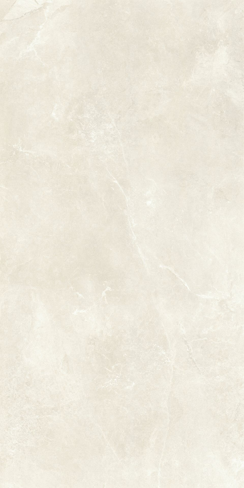
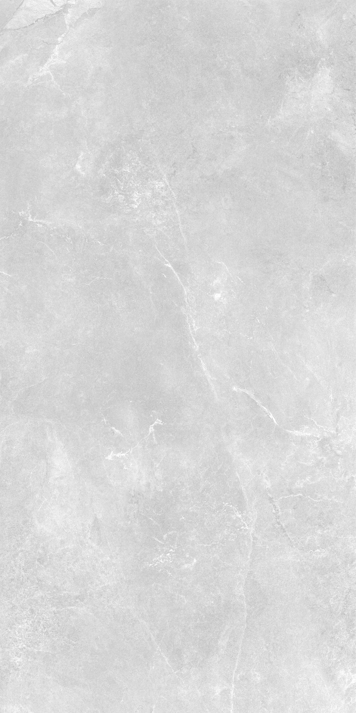
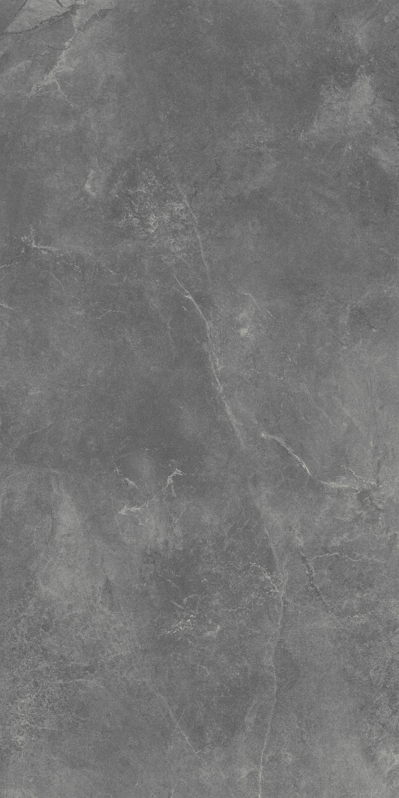
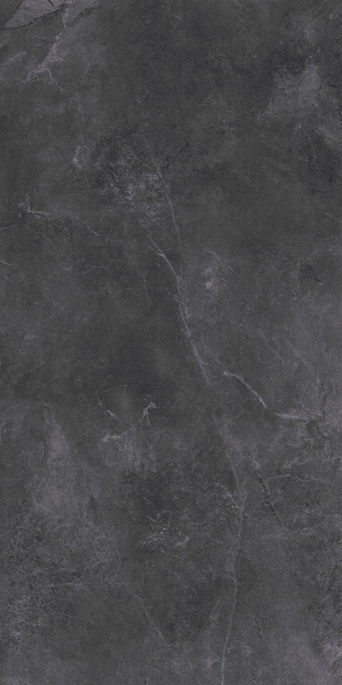

02 / SLATE CODEX
还原天然板岩的解理面与矿物层理。
深灰近黑的色调，在阴雨与晨雾中更显沉静。
SLATE SERIES
还原天然板岩的解理面与矿物层理。多层施釉还原天然解理面的层状纹理，触感粗粝而真实。深灰色调在阴天更显深邃，雨后则如墨玉般映照天光——为追求力量感与戏剧性的现代建筑而生。
| 规格 | 600 × 1200 mm |
|---|---|
| 厚度 | 20 mm |
| 吸水率 | ≤ 0.1% |
| 防滑等级 | R11 |
| 莫氏硬度 | ≥ 7 |
| 抗折强度 | ≥ 45 MPa |
| 表面工艺 | 微模+易洁干粒+通体 |
| 抗冻性 | -30℃ 冻融循环无裂纹 |
板岩系列以多层施釉还原天然解理面的层状纹理，触感粗粝而真实。深灰色调在阴天更显深邃，雨后则如墨玉般映照天光。为追求力量感与戏剧性的现代建筑而生。
索取板岩实样 →
米黄 Beige
浅灰 Light Grey
中灰 Medium Grey
深灰 Dark Grey